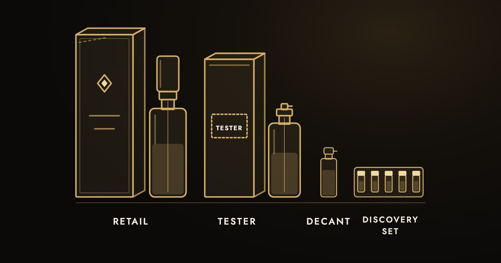
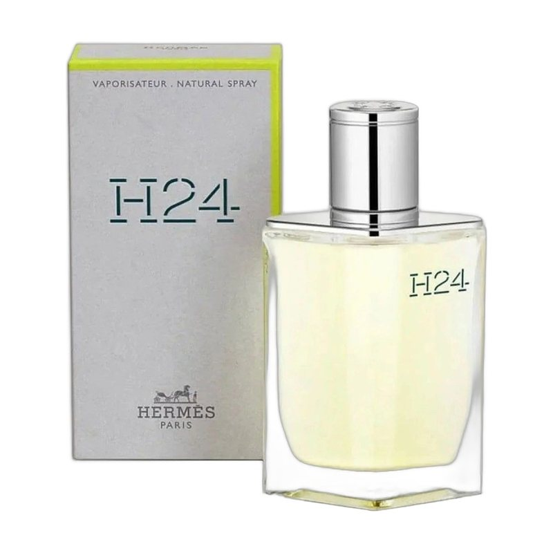
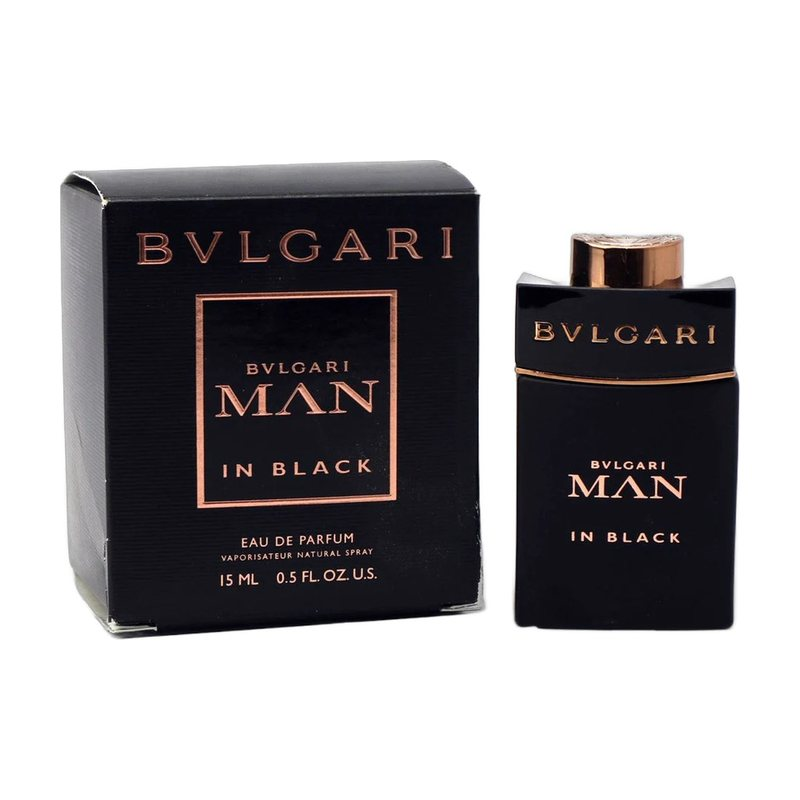
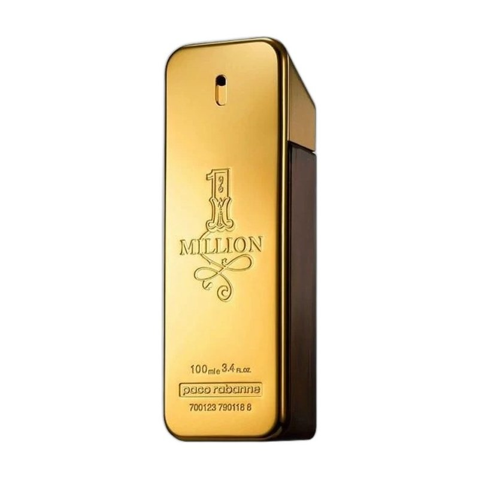

Buying smart · Guide
Retail, tester, decant or discovery set: which one is for you?
Quick answer
A retail bottle is brand-packaged and boxed. A tester is the same fragrance in plain packaging, usually cheaper. A decant is a small portion poured from a full bottle. A discovery set is a box of several small samples. Use vials, decants or sets to try a scent, and retail or tester to wear it.
The same perfume can reach you in very different forms: a boxed bottle from a shop, an unboxed tester, a few millilitres in a vial, or a set of tiny samples. They differ in packaging, size, who filled the container and, above all, price per millilitre. Knowing which is which keeps you from paying for things you don't need, and from expecting things you won't get.

The four formats at a glance
| Format | What it is | Packaging | Typical size | Best for |
|---|---|---|---|---|
| Retail | Made and sold new by the brand | Branded box, cellophane, cap | 30–200 ml | Gifts, keepers, collectors |
| Tester | Made by the brand for sampling at the counter | Plain box or none; often no cap or cellophane | Usually full size | Wearing it, not gifting |
| Decant | A portion poured from a full bottle into a small atomiser or vial | None, just a label | 1–10 ml | Trying before you commit |
| Discovery set | Several small vials or minis, usually from one house | Presentation box or tray | A few ml each, 3–10 pieces | Exploring a house; a first gift |
Sizes are typical, not exact, and they vary by brand.
Retail: the full package
Retail is the bottle you'd pick up in a shop: made and filled by the brand, sealed in cellophane inside a branded box. It is the full experience and the one to give as a gift. It also costs the most up front, and you only learn whether you really love it after you've bought it.
- Best for: gifts, collectors, and scents you already know you love.
- Watch out for: the highest outlay, and the biggest disappointment if the scent turns out not to suit you.
Tester: the same scent, plain packaging
A tester is a bottle the brand supplies to shops so customers can try the scent at the counter. It holds the same fragrance as the retail bottle but comes in plain packaging, often a simple carton or no box at all, and sometimes without a cap. That is why it costs less. If you care more about what is in the bottle than the box around it, a tester is a sensible buy. It is not the one to give as a gift.
In our catalogue every tester is listed as a Tester, and where something is missing the listing says so, for example “No Box”. For the full story, including why testers cost less and whether they are legit, read Perfume testers explained.
Decant: a small taste from a big bottle
A decant is a portion of a perfume poured from a full bottle into a small atomiser or vial, usually between 1 and 10 ml. It is filled by whoever is selling it, not by the brand. There is no brand box, and the batch code stays on the original bottle, so you are trusting the person who filled it.
Decants cost more per millilitre than a full bottle, but they let you wear a scent for days before you commit. Ask who filled it and from which bottle, and be careful with unlabelled vials: air, heat and light during the transfer can affect the scent.
- Best for: testing one fragrance properly on your skin.
- Watch out for: unlabelled vials, and sellers who can't tell you where the liquid came from.
Discovery set: many scents, one box
A discovery set (sometimes called a sampler) is a presentation box of several small vials or minis, usually from one house or one fragrance line. Brand-made sets are filled and sealed at the factory, which makes them the safest of the small formats. They are a good way to explore a house, or a first gift for someone new to perfume.
The limit is that you get the line-up chosen for you. And a “set” put together by a reseller, rather than the brand, is really a collection of decants, so check who made it.
Minis you'll find in our catalogue
Small sizes appear in the catalogue as Minis & vials: travel sprays, dab-on bottles, roller-balls and vials. The listing says which one you are getting. Where the picture shows the mini itself, the listing says so; otherwise the bottle in the photo is the full-size one and the picture carries a small “Mini” label, so you know it is not what arrives.

Mini spraya small travel atomiser (Hermès H24 EDP) 
Dab-onno spray, you dab the scent on (Bvlgari Man in Black EDP) 
Viala tiny sample, enough to try the scent (Paco Rabanne 1 Million EDT)
What does each cost per millilitre?
Divide the price by the millilitres and you can compare any format. For example (illustrative numbers, not our prices): a 100 ml bottle at ₹10,000 works out at ₹100 per ml, while a 5 ml decant at ₹750 works out at ₹150 per ml. The decant costs more per ml, but ₹750 instead of ₹10,000 is the price of finding out whether you love the perfume.
A single spray is roughly 0.1 ml, so 1 ml gives about ten sprays. That makes a 5 ml decant around fifty sprays, enough for a couple of weeks of wearing. Atomisers differ, so take the numbers as a rough guide.
So which should you choose?
- Never smelled it? Start with a vial, a mini or a discovery set.
- Know you love it and want the box for a gift or a collection? Retail.
- Know you love it and care more about the liquid than the box? A tester.
- Need something for the handbag or a trip? A mini travel spray.
- Want to compare several scents from one house? A discovery set.
Always check what you are getting
Whichever format you pick, the listing should say exactly what arrives. Ours do: the size, the type (Retail, Tester, Mini and so on) and any note such as “No Box” appear on every card. If you are ever unsure, ask us before you order.
Common questions
What is the difference between a tester and a retail perfume?
A retail bottle is made and sold new by the brand in a branded box with cellophane and a cap. A tester is a brand-made bottle supplied for sampling at the counter. It holds the same fragrance in plain packaging, often with no box or cap, which is why it costs less. Read more about testers.
What is a perfume decant?
A decant is a small portion of a perfume poured from a full bottle into a small atomiser or vial, usually 1 to 10 ml, by the seller and not the brand. It has no brand box, so you rely on the seller. Decants cost more per ml than a full bottle but let you try a scent for days.
What is a perfume discovery set?
A discovery set (or sampler) is a presentation box of several small vials or minis, usually from one house or fragrance line. Brand-made sets are filled and sealed at the factory, which makes them the safest small format. They suit exploring a house or a first gift.
Is a decant cheaper than a full bottle?
A decant costs less up front but more per millilitre. For example (illustrative numbers, not our prices): a 100 ml bottle at ₹10,000 is ₹100 per ml, while a 5 ml decant at ₹750 is ₹150 per ml. The decant is the cheaper way to find out whether you love a perfume.
How many sprays are in 1 ml of perfume?
A spray is roughly 0.1 ml, so 1 ml gives about ten sprays. A 5 ml decant is around fifty sprays, enough for a couple of weeks of wearing. Atomisers differ, so take the numbers as a rough guide.